Ontstaan van het wapen van de Spaanse Habsburgers:
In 1362 krijgt Filips de Stoute, de jongste zoon van de Franse koning Jan II de Goede, de titel van hertog van Bourgondië. Hierdoor ontstaat zijn wapenschild: met zijn eigen ridderschild in het eerste en vierde kwartier (namelijk "france"= azuur bezaaid met gouden lelies, met een geblokte zoom in keel en zilver) en het oude wapen van Bourgondië in het tweede en derde kwartier. (goud met azuren schuinbalken, met een boord van keel).
Het wapen dat aldus ontstond wordt "Bourgondië Modern" genoemd.
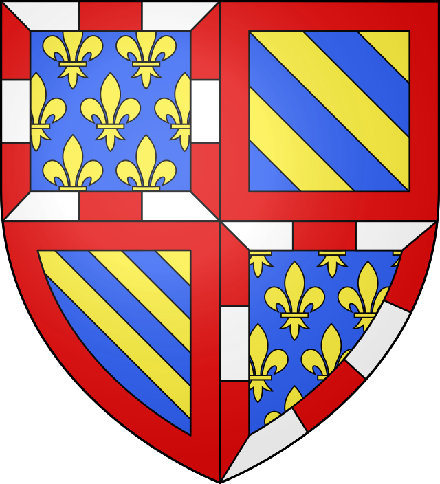
Hij huwde in 1369 met Margaretha van Male, de dochter en erfgename van de graaf van Vlaanderen, en weduwe van de vorige hertog. Hierdoor kon hij het wapen van Vlaanderen toevoegen aan zijn wapen in de vorm van een hartschild. De generatie na Filips de Stoute, Jan Zonder Vrees (1404) veranderde zijn wapen niet. Ook diens zoon Filips de Goede (1419) had aanvankelijk hetzelfde wapen.
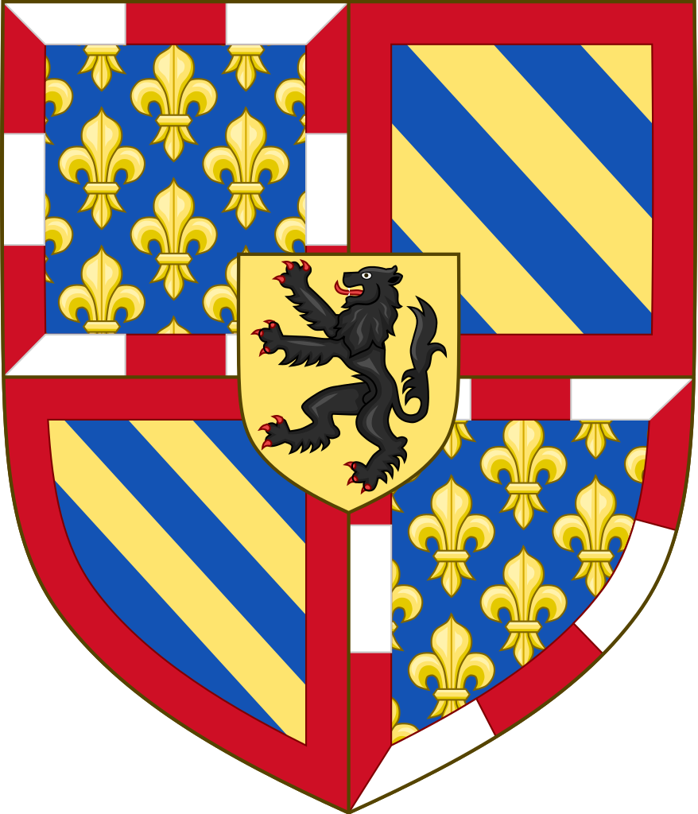
Toen Filips de Goede echter in 1430 ook de titels van hertog van Brabant en Limburg kreeg, voegde hij de wapens hiervan toe aan zijn wapen:
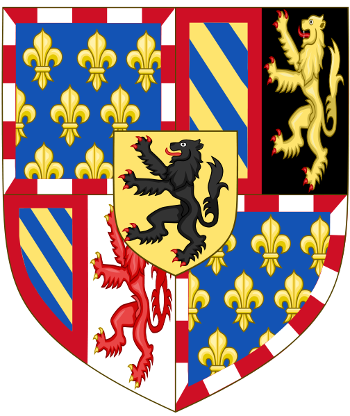
In de St-Baafs-kathedraal in Gent werd op 6, 7 en 8 november 1445 het 7de kapittel van het Gulden Vlies gehouden.
De 37 wapenschilden van alle toenmalige ridders van het Gulden Vlies, die speciaal voor deze gelegenheid werden geschilderd, hangen nu nog altijd in deze kerk.
Het wapenbord met het wapenschild van Filips de Goede is hieronder weergegeven.

Zijn zoon Karel de Stoute (1467) en daarna diens dochter Maria van Bourgondië de Rijke (1477), behouden dit wapen. In hetzelfde jaar trouwt ze met Maximiliaan van Oostenrijk.
Aldus ontstaan de volgende wapens: links het wapen van Maximiliaan van Oostenrijk, rechts dat van zijn vrouw Maria van Bourgondië de Rijke.
Ze zijn bijna gelijk, het wapen is in beide gevallen in twee helften gedeeld, de wapens van de eigendommen van de man links, deze van de vrouw aan de rechterkant. (impalement)
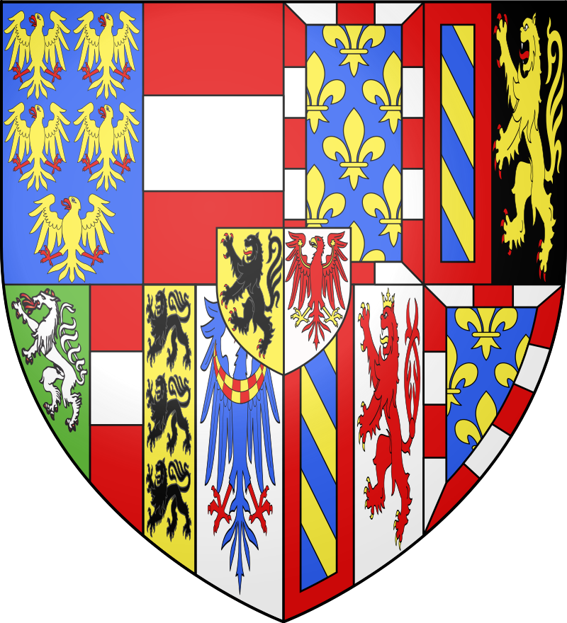 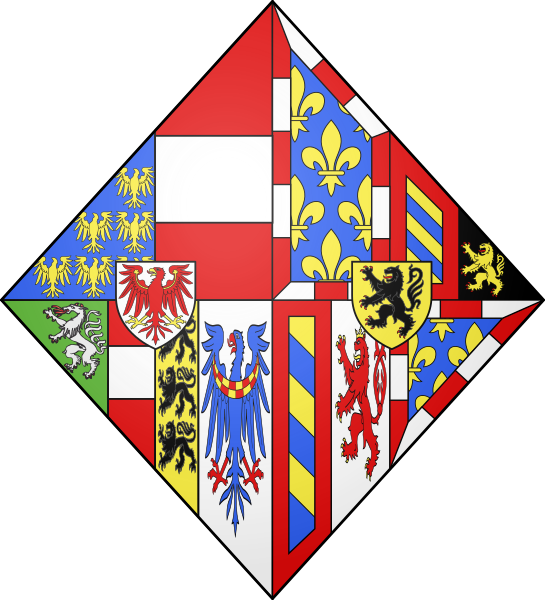
De kwartieren van Maximiliaan als aartshertog van Oostenrijk zijn:
doorsneden, de bovenste helft: gedeeld, rechts: azuur, vijf gouden adelaars, 2 2 1 (Oud-Oostenrijk), links: rood met zilveren balk (Oostenrijk), de onderste helft: gedeeld in drie: rechts: groen een zilveren draak (Stiermarken), midden: gedeeld van Oostenrijk en goud drie zwarte gaande leeuwen (Karinthië), links: zilver blauwe adelaar met rood-wit geblokte liggende maan op de borst (Krain), hartschild van zilver, rode adelaar (Tirol).
Hun zoon Filips de Schone voert een wapen als vorst van de Nederlanden dat een combinatie is van de wapens van zijn ouders. (Oostenrijk, Bourgondië, Brabant en Vlaanderen)
Zijn moeder sterft in 1482 en zijn vader
is voogd tot zijn meerderjarigheid in 1494 (16 jaar), waarna zijn vader die in
1493 tot keizer was verkozen, het land verlaat.
opmerking: de titel 'hertog van Bourgondie' gaat definitief verloren in 1493 met de Vrede van Senlis .
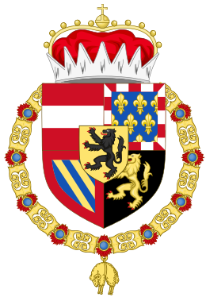
In 1496 huwt Filips de Schone met Johanna van Aragon, later de Waanzinnige genoemd, erfgename van Spanje. Zij was de dochter uit het huwelijk van Ferdinand van Aragon en Isabella van Castilië.
In 1230 werden de koninkrijken Castilië en Leon verenigd met als eerste koning Ferdinand III.
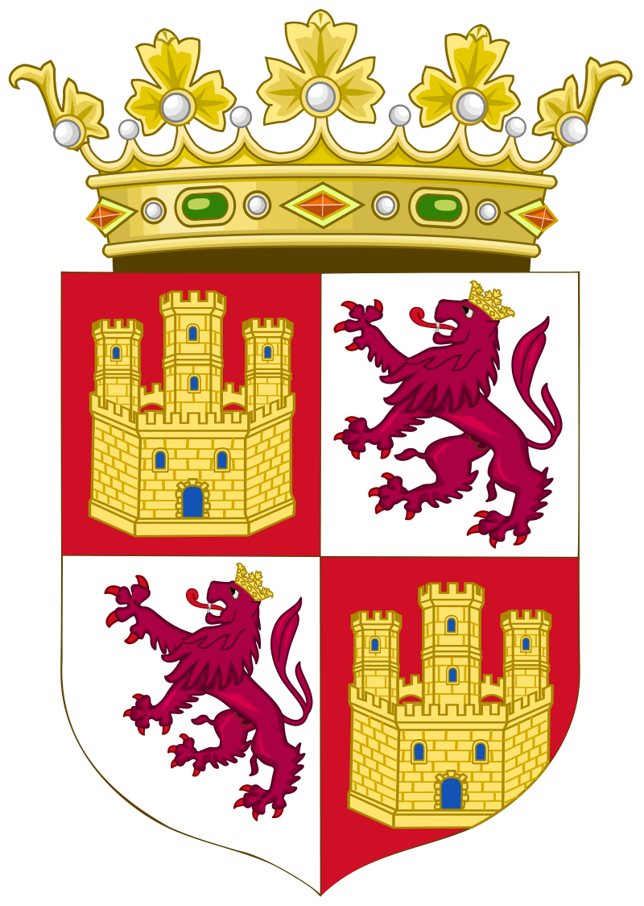
Anderzijds werden in 1409 de koninkrijken Aragon en Sicilië samengebracht onder koning Martin.
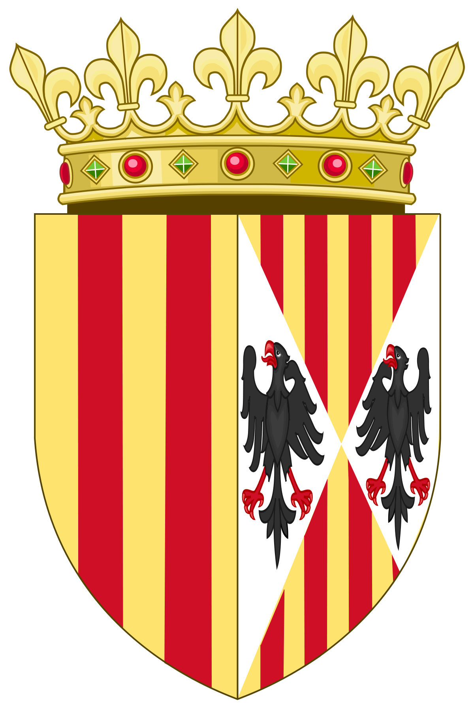
Later werd ook het koninkrijk Navarra hiermee verenigd. (wapen: keel=rood, kettingen van goud)
Johanna de Waanzinnige voerde dus het wapen van heel Spanje, namelijk in het eerste en vierde kwartier Castilië en Leon gekwartierd, en in het tweede en derde: Aragon en Sicilië naast elkaar. In 1494 werd ook het koninkrijk Granada veroverd op de Moren en de granaatappel werd mee op het wapen gezet.
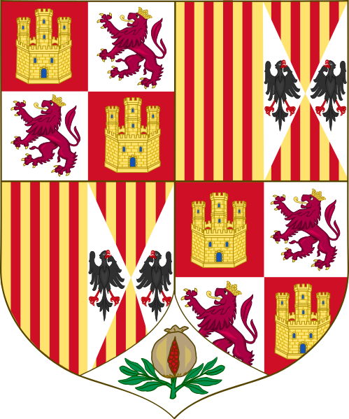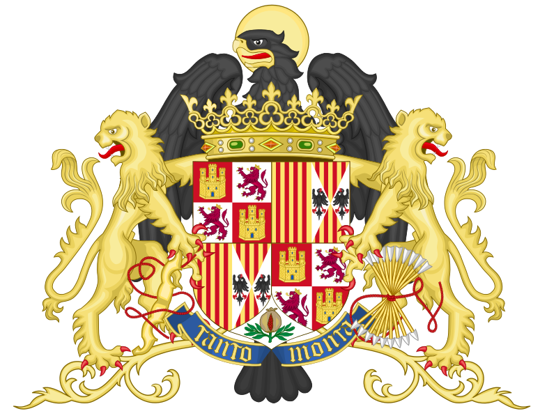
Aangezien Filips I de Schone door zijn huwelijk koning-gemaal van Spanje werd, voerde hij een van Spanje en de Nederlanden gekwartileerd wapen.
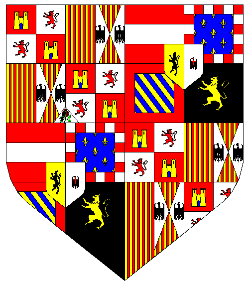 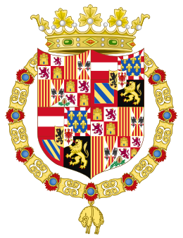
Zijn erfgenaam keizer Karel V gebruikte later voor onze streken het wapen van het keizerrijk: een tweekoppige zwarte adelaar op gouden veld, met op de borst een schild doorsneden van Spanje en de Nederlanden.
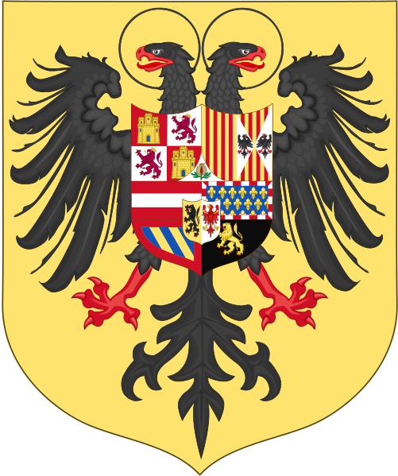 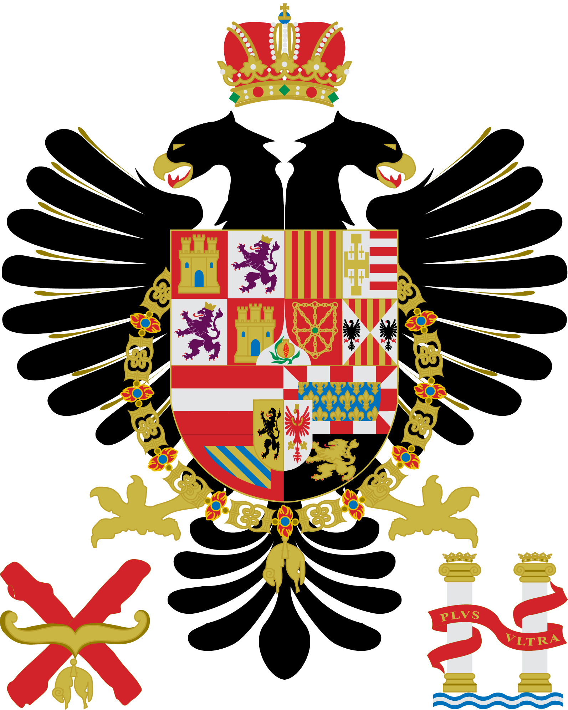
Zijn opvolger in de Nederlanden was Filips II, die door het verdrag van Augsburg geen aanspraak meer kon maken op de keizerskroon, en dus enkel het van Spanje en de Nederlanden doorsneden wapen voerde. Hij dringt zich ook op als koning van Portugal in 1580, via zijn overleden eerste vrouw, en plaats vanaf dan het wapen van Portugal mee in zijn wapen in de vorm van een hartschild.
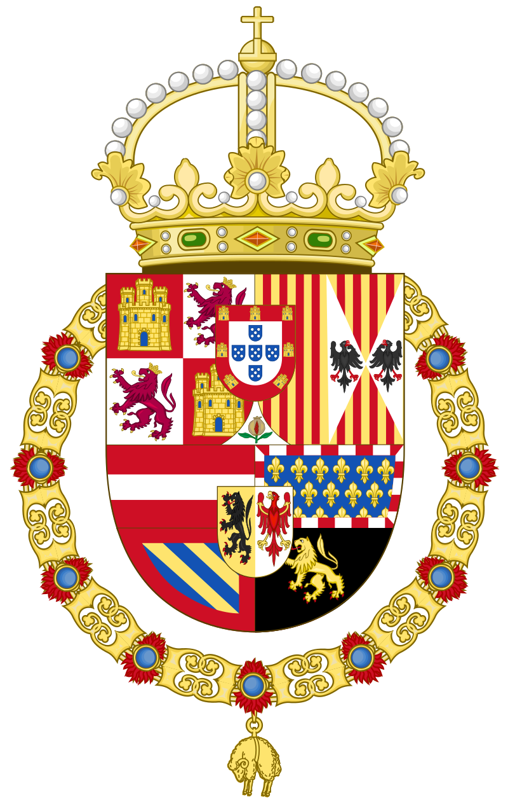
In de reeds genoemde St-Baafs-kathedraal in Gent vond in 1559 weer een kapittel van het Gulden Vlies plaats, het 23ste en meteen ook het laatste.
Ook bij deze gelegenheid werden wapenborden gemaakt van alle ridders van het Gulden Vlies op dat moment en ook deze zijn nog steeds te bekijken ter plaatse.
Hieronder 2 voorbeelden van de 51 stuks, namelijk deze van keizer Karel V en van Filips II.
(merk bij Karel V de vermelding "Trespassé" op: hij was namelijk in 1558 overleden)
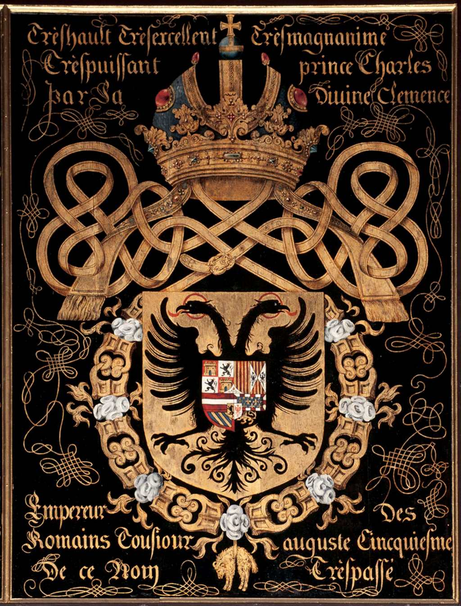 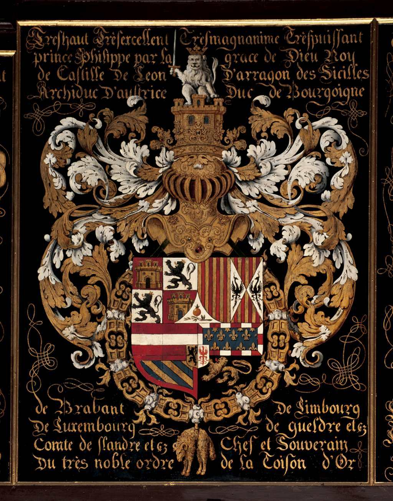
Tegenwoordig zijn in het wapen van Spanje trouwens nog steeds de verschillende landsdelen terug te vinden, met doorover een ovaal schild van Bourbon, het wapen van de huidige koninklijke familie.
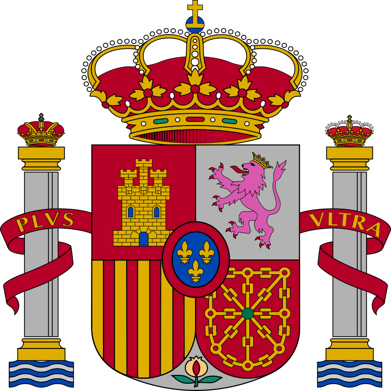
Als schildhouders zien we de zogenaamde zuilen van Hercules, die de beide oevers aan de Straat van Gibraltar voorstellen. De kwartieren zijn Castilië, Leon, Aragon, Navarra en Granada.